UVVM Simulation with Modelsim
This article introduces how to use UVVM on Modelsim to simulate a custom IP in a Zynq system.
1. Simulation with Modelsim
Typically, Vivado uses XSim as the default simulation tool. However, in this guide, we will use Modelsim instead. The main steps to run a simulation with Modelsim are:
- Compile Xilinx simulation libraries in Modelsim: This allows Modelsim to recognize and use Xilinx IPs (Intellectual Property).
- Export simulation scripts from Vivado: Vivado can automatically export the scripts required for Modelsim simulation.
- Launch Modelsim and run the simulation: Use the generated scripts to start the simulation process.
- Modify/Create a Testbench: Improve or create testbenches to thoroughly verify your design's functionality.
Note: Xilinx AXI Verification IP (VIP) requires a specific license. Without this license, Modelsim will fail to simulate designs containing AXI VIP.
1.1 Compiling Xilinx Libraries in Vivado
Before using Modelsim, we must compile the Xilinx simulation libraries so that Modelsim knows the various Xilinx IPs. This is done as follows:
- Open Vivado.
- Go to Tools → Compile Simulation Libraries.
- Specify the Compiled library location (where compiled libraries will be saved) and the Simulator executable path (path to the Modelsim executable file).
- Click "Compile".
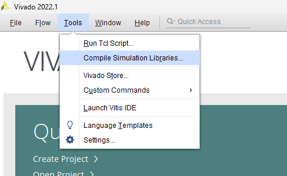
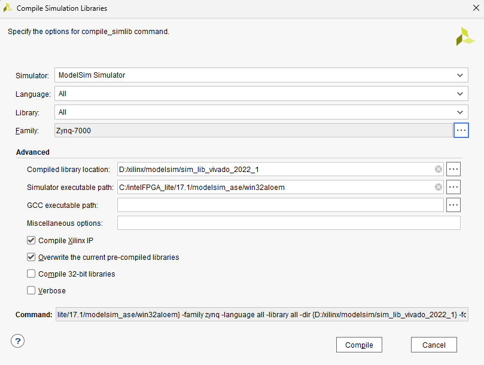
Once compilation is complete, a modelsim.ini file will be generated. This file serves as the initialization script that Modelsim uses to load Xilinx libraries when it starts.

Considerations:
- Compilation Time: Compiling all Xilinx IPs can take a long time (approximately 1 hour in my experience).
- Compilation Errors: Testing with Modelsim 10.5b (Quartus 17.1) and Vivado 2022.1 showed that a few modules (around 4 modules) might encounter compile errors. However, since my Vivado design doesn't use these modules, it shouldn't be an issue.


- GCC Path Configuration: If a GCC path is required, there is an interface to configure it during the library compilation process.
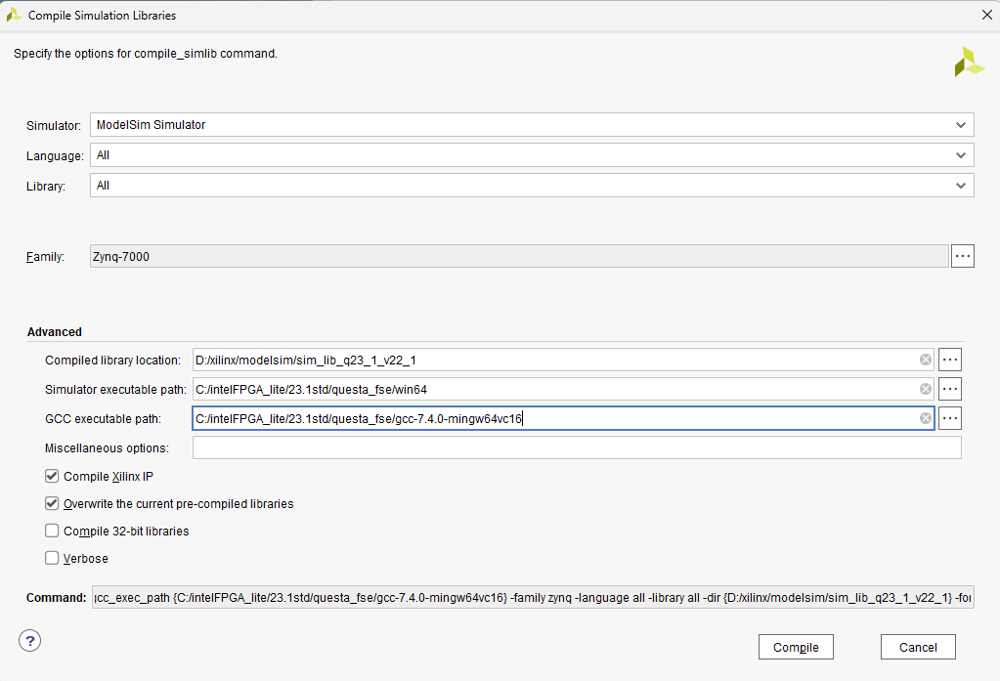
1.2 Simulation with Modelsim (For Designs Without Xilinx VIP)
For designs that do not use Xilinx VIP, simulation with Modelsim is straightforward:
- Export Simulation in Vivado:
- Create a simulation set named "sim" in your project (if not already present).
- In Vivado, click "Export Simulation".
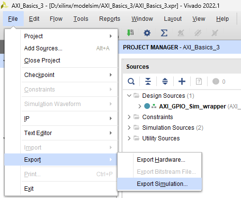
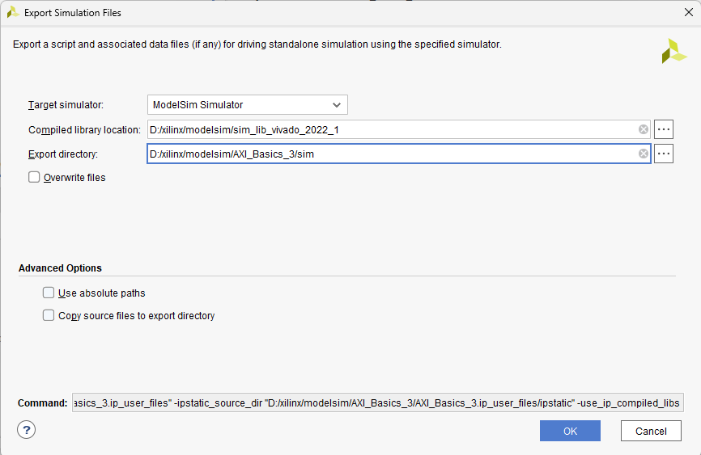
- Running the Simulation:
- After exporting, you will find
compile.doandsimulate.doscripts under the "sim" directory in your project folder. - Tip: To prevent Modelsim from closing automatically after the simulation finishes, comment out the line containing
quit -forcein thesimulate.doscript.
- After exporting, you will find
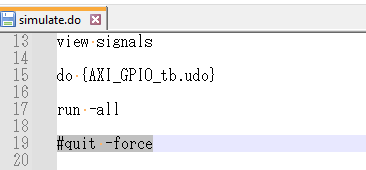
- Note: If the design includes Xilinx VIP, you might encounter compile errors or simulation failures because of the missing license.
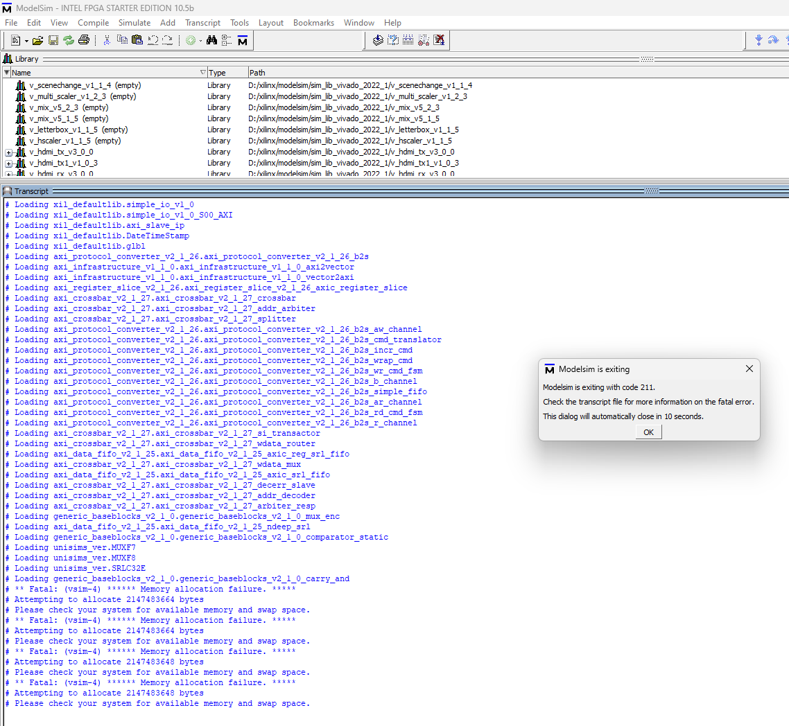
1.3 Running Simulations with UVVM + Modelsim
Example commands for running a simulation that integrates UVVM and Modelsim:
cd d:/xilinx/modelsim/AXI_Basics_3/UVVM_Light-master/sim/
do ./compile_and_run_demo_tb.do
do ./sim.do
The arguments xil_defaultlib uvvm_util.tb_axs_iomap xil_defaultlib.glbl are part of the vsim command, specifying the libraries and design entities to load for simulation.
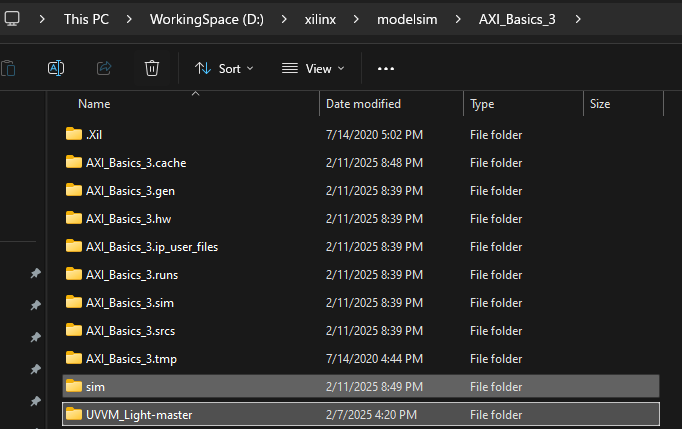
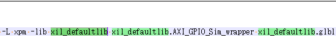
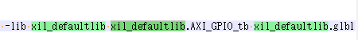

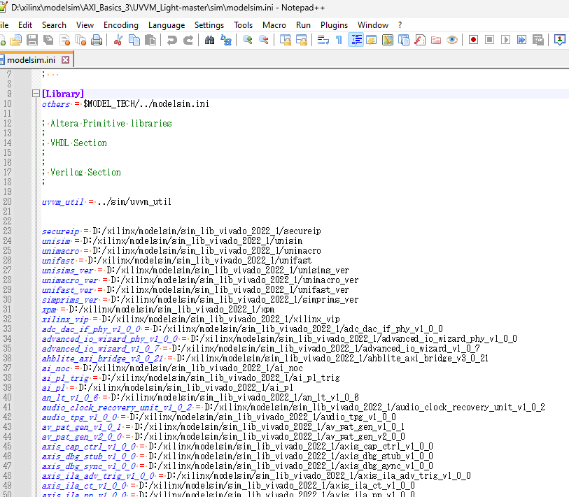
1.4 Simulating Zynq Designs with UVVM + Modelsim
To simulate more complex Zynq designs using UVVM and Modelsim, some script modifications are required:
- Copy UVVM Source Files:
- Copy the
modelsim.inifile (generated from compiling Xilinx libraries) into theUVVM_Light-master\simdirectory.
- Copy the
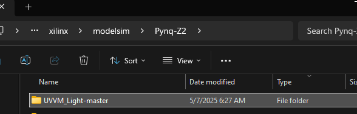
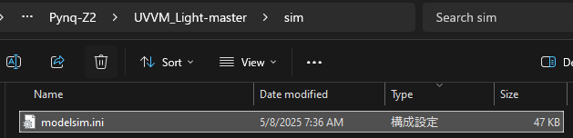
- Export Simulation in Vivado:
- Create a folder named "sim" in your Vivado project.
- In Vivado, click "Export Simulation".
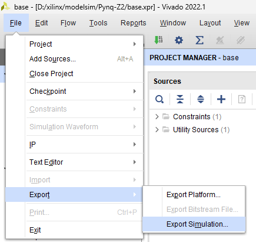
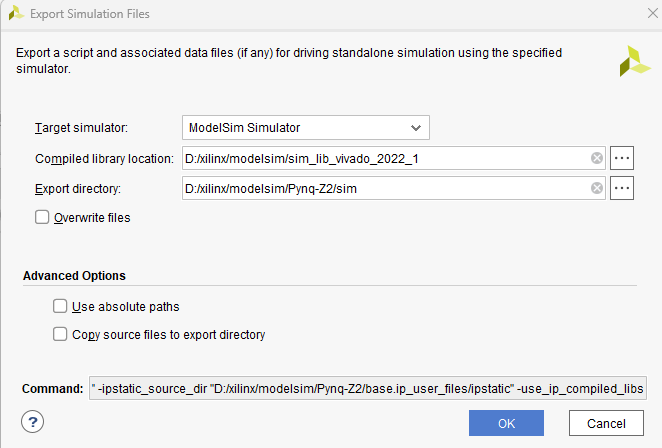
- Modify Code and Scripts:
- Modify
Pynq-Z2\sim\compile.do:- Add the line
vlib modelsim_libto create a library for Modelsim. - Remove the
include vippart (if any) to avoid Xilinx VIP issues. - Remove the compilation lines for
base_ps7_0_0(as we will use UVVM instead). - Modify the paths for
tb_prj_top.vandglbl.vlike this:"../../UVVM_Light-master/tb/tb_prj_top.v" \ "../../sim/modelsim/glbl.v" - Note on
tb_prj_top.v: In a standard Vivado (XSim) setup,tb_prj_top.vuses Xilinx VIP to drive the AXI bus. If you wish to control it via UVVM, comment out all portions relating to Xilinx VIP in this file.
- Add the line
- Modify
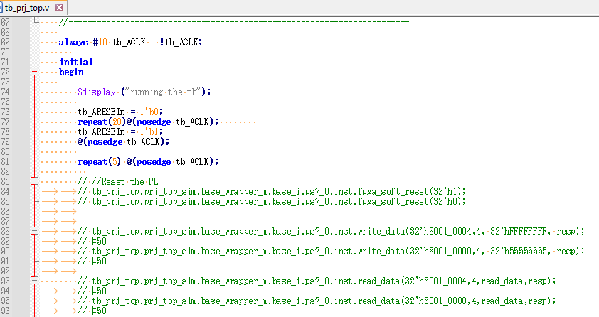
- Modify
Pynq-Z2\UVVM_Light-master\sim\compile_and_run_demo_tb.do:- Add the following code:
do ../../sim/modelsim/compile.do vlib uvvm_util eval vcom $compdirectives -work xil_defaultlib ../tb/base_ps7_0_0.vhd
- Add the following code:
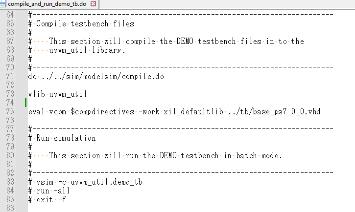
- Note: The file
base_ps7_0_0.vhdshould contain the UVVM control logic for the Zynq Processing System (PS). - File Locations: Place the files
base_ps7_0_0.vhdandtb_prj_top.vinto thePynq-Z2\UVVM_Light-master\tb\directory.
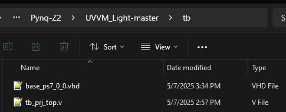
- Create
sim.doinPynq-Z2\UVVM_Light-master\sim:- Copy the
vsimcommand fromPynq-Z2\sim\simulate.do. - Remove VIP-related libraries from the
vsimcommand (leaving them in will cause errors without a license). - Save the modified command to
Pynq-Z2\UVVM_Light-master\sim\sim.do.
- Copy the
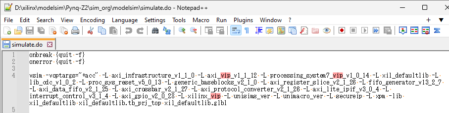
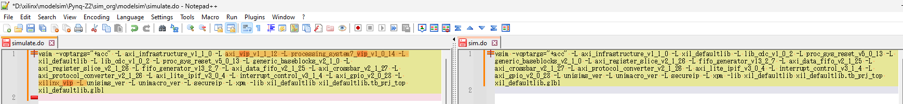
- Simulating with Modelsim:
- Open Modelsim.
cd d:/xilinx/modelsim/Pynq-Z2/UVVM_Light-master/sim/ do ./compile_and_run_demo_tb.do do ./sim.do
- Open Modelsim.
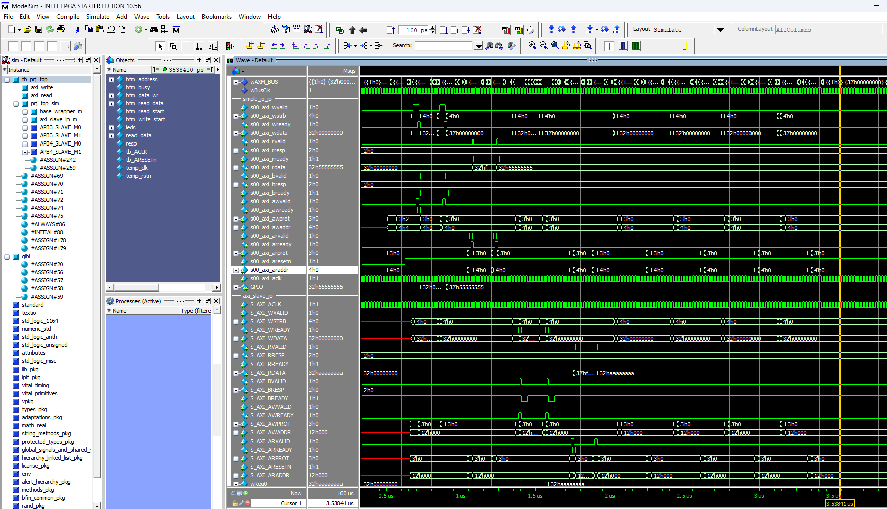